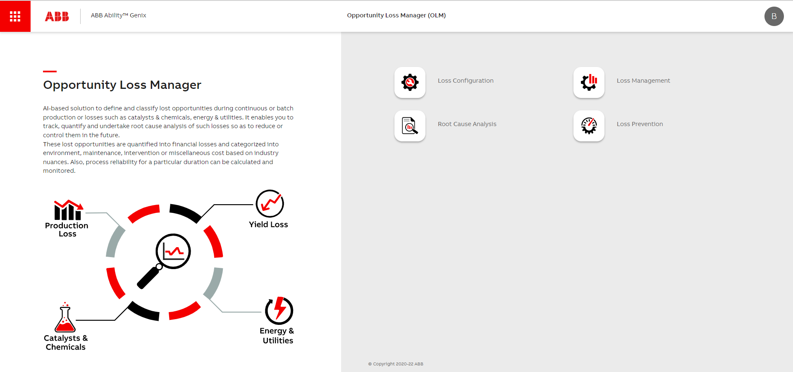
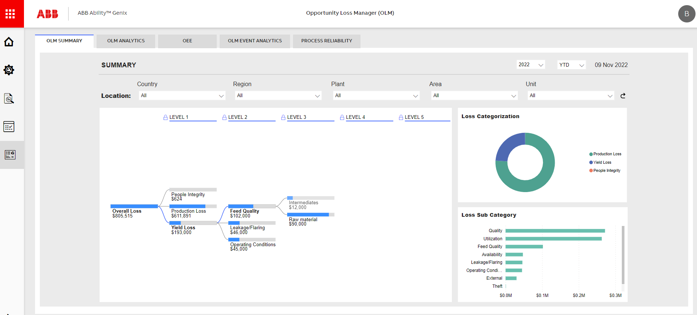
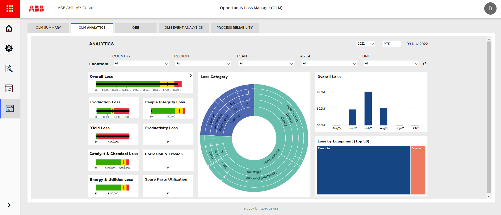
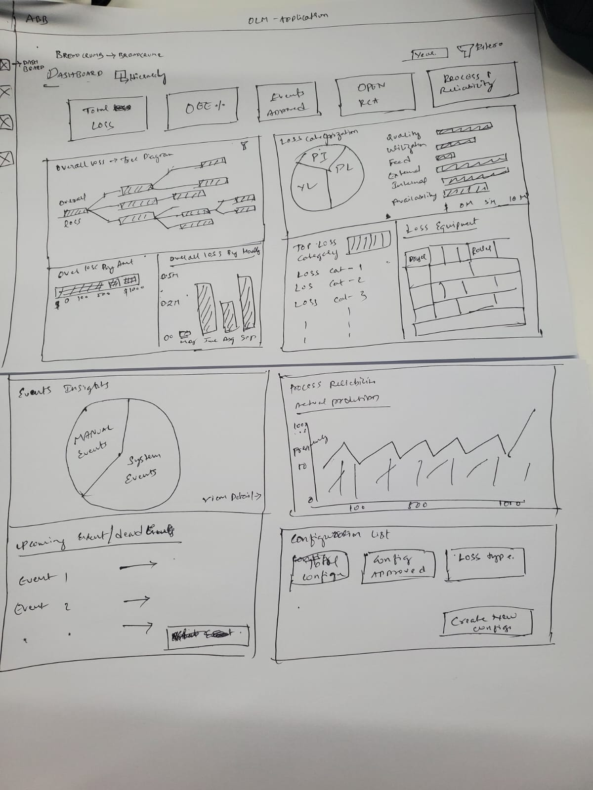
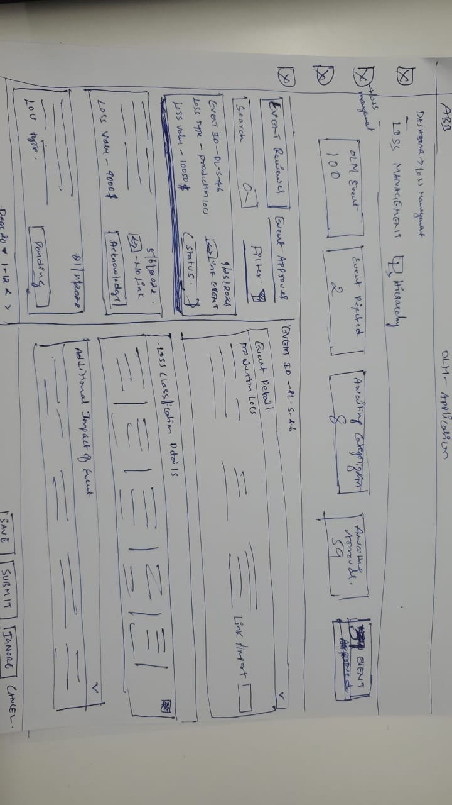
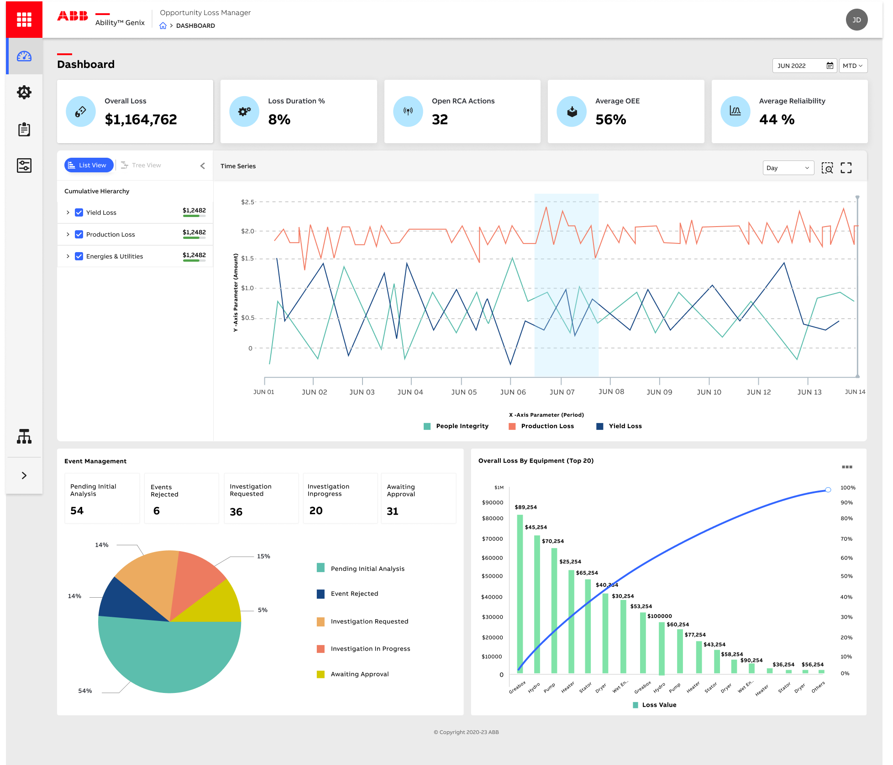
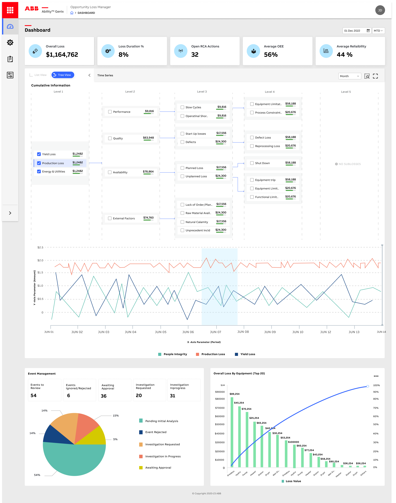
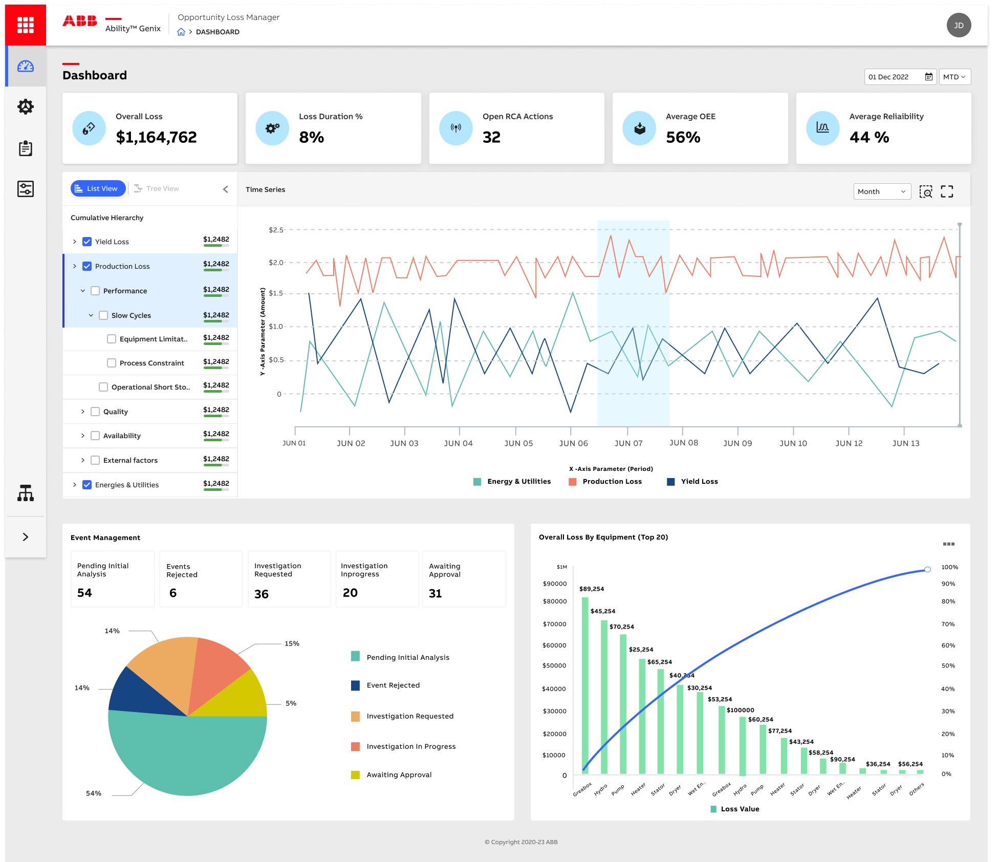
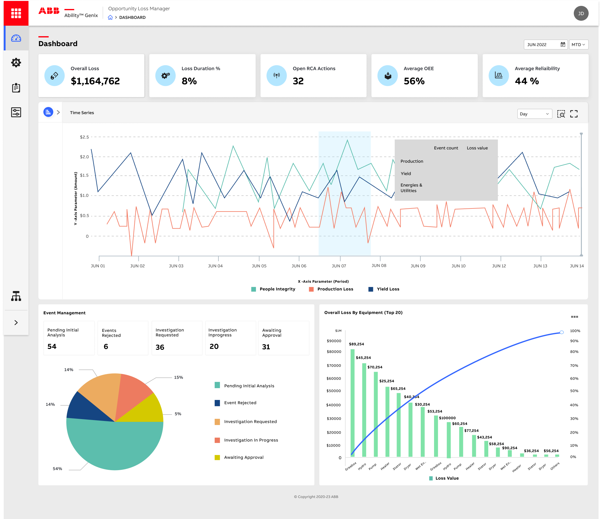

Redesigning an enterprise loss-tracking tool used by plant managers and process engineers across continuous production sites.
OLM tracks lost opportunities in continuous production — yield, energy, catalyst, downtime. The existing interface had grown organically over multiple releases.
Tiles highlighted in red were the three principles most frequently violated across the audited pages.

Users land on a hub of four module tiles. The page they actually need — Insights — is two clicks away every session.

Insights split across OLM Summary, OLM Analytics, OEE, OLM Event Analytics and Process Reliability — each with its own location filter.

Event lists rendered as one wide table. Reviewer/Approver state lived in inline links. "Create event" sat next to filter dropdowns.
5 modules · 18 sub-pages · 5 disconnected insight tabs
3 modules · 9 sub-pages · global filter bar at root


The new home screen surfaces Overall Loss, OEE, Reliability and Open RCA actions at the top, with a global filter bar and a single, drillable loss chart below.


Cumulative loss hierarchy with five drilldown levels — the analyst's view.

Expandable list — the plant manager's view for monthly review.

Day-level time series with hover-state event breakdown — the engineer's view.
I'm open to senior UX and design lead roles in enterprise & industrial software.